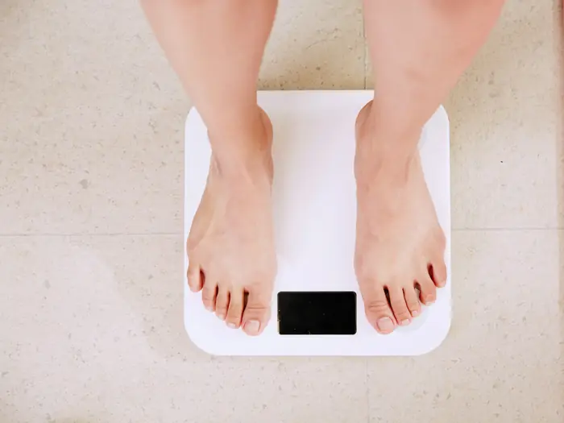

Kilo yönetimi
Aç kalmadan, porsiyon ve öğün düzeniyle kilo vermek ya da vermiş olduğunuz kiloyu korumak için. Duygusal yeme ve gece atıştırmaları da konuştuğumuz konular arasında.
- Kilo verme
- Kilo koruma
- Duygusal yeme
İlk görüşme · 60 dk
Randevu al